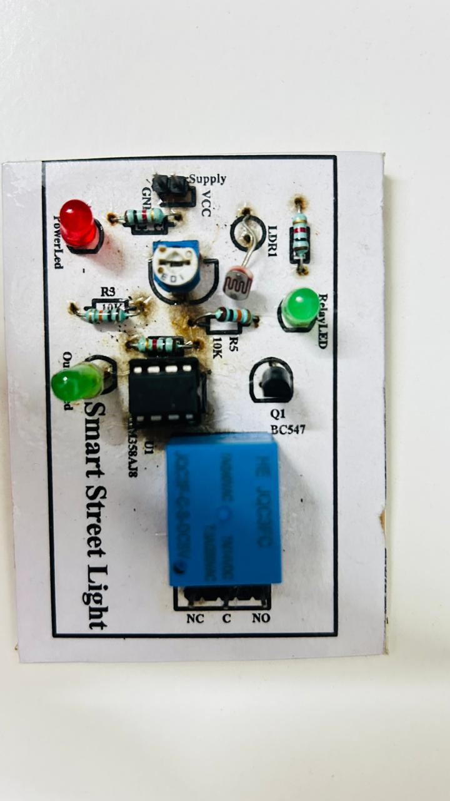

The LDR responds to the surrounding light level and provides the sensing input for the control circuit.
PCB DESIGN · AUTOMATION · EMBEDDED HARDWARE
SMART STREET LIGHT
MONITORING SYSTEM.
A compact PCB-based automated street lighting prototype developed as part of a college skill-development workshop, using ambient-light sensing to control street-light operation and reduce manual intervention.
DESIGNSPARK PCB
LDR
LM358
BC547
RELAY
PCB FABRICATION
01 / HARDWARE
FABRICATED PROTOTYPE
FROM SCHEMATIC
TO BOARD.
The project involved schematic design, component selection, PCB routing, fabrication, soldering, component integration and practical prototype validation.

02 / CIRCUIT
SENSING + SWITCHING
THE CONTROL
CHAIN.
The LM358-based stage processes the light-dependent signal and determines the switching condition.
A BC547 transistor is used in the switching path to drive the relay from the control signal.
The relay provides the switching interface for the street-light load, with LEDs indicating circuit status on the prototype.
03 / PCB WORKFLOW
DESIGN → BUILD → TEST
BUILT
HANDS-ON.
Schematic
Planned the circuit architecture and selected the components needed for ambient-light-driven switching.
PCB Routing
Used DesignSpark PCB for schematic capture, component placement and PCB routing.
Assembly
Fabricated the board and completed soldering and component integration to produce the working prototype.
Testing
Evaluated the switching behaviour under varying lighting conditions and checked the prototype for functional correctness.
04 / OUTCOME
PRACTICAL TAKEAWAY
LOW-COST
INTELLIGENCE.
The prototype demonstrated the feasibility of a compact, low-cost automatic lighting system that responds to environmental conditions while reducing manual intervention. The project also provided hands-on experience across the complete PCB development cycle.
AMBIENT-LIGHT AUTOMATION
ENERGY-EFFICIENT CONCEPT
PCB DESIGN
HARDWARE ASSEMBLY
PROTOTYPE VALIDATION
SMART-CITY APPLICATION
05 / WORKSHOP
CERTIFICATION
SKILL
DEVELOPMENT.
The project was developed as part of a two-day Skill Development Program on PCB Design and Fabrication conducted by Indian Tech-Keys, Bengaluru, in association with the Department of Electronics and Communication Engineering, B.M.S. College of Engineering.